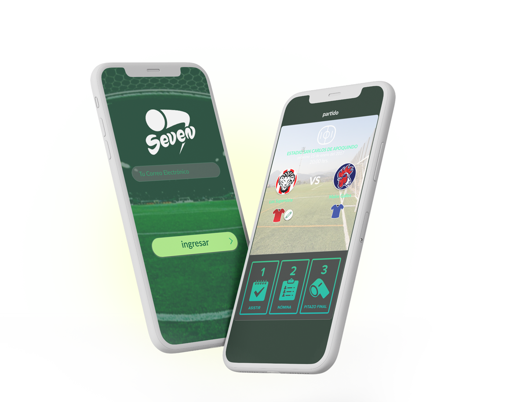

El fútbol en formato siete brinda la oportunidad de experimentar la emoción y la diversión del fútbol en un entorno más compacto, para un juego más ágil y accesible
Diseño de Interfaz
Esta página muestra parte del diseño visual, UX-UI, esquemas y prototipo para la App social - SEVEN - que desarrollada en 2017, busca integrar la pasión por el fútbol a nivel local, con encuentros amistosos entre equipos amateur de siete integrantes. ⚽